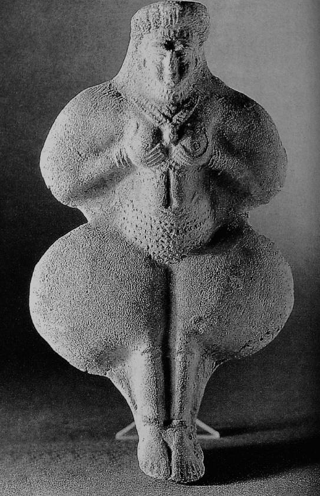

农业革命最明显的影响是产生了定居这种新的生活方式。事实上，为了照料新驯化的动植物，人类也不能不定居下来。于是，新石器时代的村庄取代旧石器时代的流浪团体而成为人类最基本的经济文化单位。实际上，它构成了18世纪末期之前一直居统治地位的一种生活方式的基础。这种生活方式即使到今天还存在于世界上许多经济不发达的地区。
最近的考古发掘揭示，我们的早期祖先并不局限于要么选择游牧和采集生活，要么选择定居农耕生活。如果当地的动植物食物来源异常丰富，当地居民也可能长年定居于村庄，即便他们完全靠狩猎和采集为生。这一情形曾在叙利亚北部的阿布·哈热耶（Abu Hureyre）地区出现过。那里野生的谷物和豆类长得非常稠密，产量极高，就像把它们种在田里时一样。因此，这就使一个人数多达300—400人的狩猎采集者村庄有可能在该地区兴盛数百年。同样优越的条件也使食物采集者在其他一些地区如太平洋东北部沿海地区（俄勒冈州、华盛顿州和加拿大不列颠哥伦比亚省）永久地定居下来，那些地区长年盛产鱼类。同样，在太平洋南部地区，沿秘鲁海岸一线，合适的洋流养育了涵盖整个生态系统的海洋生物：从浮游植物到鸟类和海洋哺乳动物。因此，在这些地方，食物采集者也定居于永久性的村庄，以采食海岸边各种海洋生物为生。不过，这类村庄只能算是一种例外情况：一般说来，游牧生活是食物采集的自然结果，就像定居生活是食物生产的自然结果一样。
人们容易把新石器时代的村落生活浪漫化，但这样做将是非常误导的。为了生产食物和若干手工业品，每一个人，包括成年男子、妇女和儿童，都必须工作，而且必须努力地工作。由于人们对土壤、种子、肥料和农作物轮植诸方面知识的掌握是极其缓慢而又费力的，所以生产率很低。尽管人们付出了艰巨的劳动，可天公不作美，有时久雨成涝，有时滴雨不下，有时瘟疫横行，故饥荒是常客。定居生活使粪便和垃圾的处置成了棘手的问题，传染病常常一次又一次地袭击那些村庄。虽然狗发挥了清洁环境的作用，人出于传统的害羞心理，跑到离住处较远处解手，但是，这些并不足以防止因病菌由口而入所致的各种疾病。而且由于食物来源不足，通常的饮食很不全面，营养不良乃最为常见的事。处于这些境况下，可以估计，那时人的寿命是非常短的；但是高出生率往往使各地村庄的人口有所增加，因而，食物供求之间的平衡总是通过饥荒、传染病或移民来得到恢复。
不过，新石器时代的村庄生活也并非一片阴影、充满了不幸和苦难。这是一个技术进步飞快的时代，速度远远超过了前二三百万年的旧石器时代。究其根本原因，与其说是新石器时代的人比旧石器时代的人有更多的空闲时间——这种通常的设想现在是很可怀疑的，不如说是定居的生活方式使人们能拥有更为丰富的生活资料。过流浪生活的狩猎者，由于随身可携带的物品有限，其生活水平受到很大的限制；而新石器时代的村民却可以尽情地享用坚固的住房、舒适的家具、生活用具、工具和各式各样的装饰品。在这样的环境下，新石器时代的村民学会了用生黏土制作陶器。最初，他们自然只是仿制农业时代以前的篮子、葫芦和其他容器。渐渐地，他们掌握了陶器材料的特性和制作陶器的技术，能够制作出和过去的容器完全不同的器皿。到新石器时代末期，近东的居民们开始建造窑或炉。窑和炉烧火时温度较高，因而能用于给陶器上釉。上过釉的表面可以密封陶器，防止液体渗漏或蒸发。这样，农人们就有了不仅能用来贮存谷物，而且能用来烹调食物、存放油和啤酒等液体的各种器皿。
纺纱品方面也取得了类似的进步。旧石器时代晚期的人也许已能把荒山野岭中的绵羊、山羊、狗或其他动物身上的毛捻纺成粗线，再把粗线织成带子、束发带甚至粗毛毯。实际上，他们还可能已能用黏土制作粗糙的容器模型。但是，只有到了新石器时代，人类才能够像发展制陶技术那样去发展纺织技术。新石器时代的人利用刚刚培育成功的亚麻、棉花和大麻等植物纤维，在逐渐得到发展的锭子和织机上进行纺织。新石器时代的人还学会了建造比较坚固、宽敞的住房。造房子用的材料因地而异。纽约州北部的易洛魁人住在能够容纳十多户人家的大房子里，被称为“长房子人”，这种房子是用树皮和木头建造的。在中东，住房的墙是用土坯做的；而在欧洲，最常用的建房材料是劈开的幼树，上面厚厚地涂盖一层黏土和牲畜的粪便；房顶可能一般都是用茅草盖的。这些住房内部设有固定的床，床上可能还覆盖一层用布做成的床罩。住房内还有现代式样的、里面至少有两层隔板的橱柜和各式各样的壁橱。房间的中央通常都会生起一堆火，供照明和取暖用。房子没有烟囱，只是在屋顶上开个洞或在屋檐下留条缝，用来排烟。
定居生活也使部落政治组织取代各游猎民族单独的群体成为可能。部落由一个地区若干村庄的居民组成；每个部落都有独特的语言和风俗习惯，把它们区别开来。有些部落，一般是那些处于原始经济状态的部落，发展很不充分，完全没有定型，几乎还处于游猎群体的水平。还有些部落则已有强有力的首领、原始贵族及平民，不过他们之间的界线模糊不清，那时还根本没有后来的文明所特有的阶级结构。
通常，构成新石器时代的村社的社会基本单位是由若干对夫妻和他们的孩子组成的大家庭。这种大家庭较适宜处理在勉强维持生活的过程中所遇到的种种问题，所以比独立的一夫一妻制家庭更为常见。如果有个别生产者暂时或永远丧失了他的劳动能力，大家庭也能承受这一损失。当遇上“大忙”，需要众多的人手来开伐森林、收割农作物或放牧家畜时，大家庭也能更有效地发挥作用。另外大家庭还能通过留一部分成员在家料理家务和照管附近的田地，派其他成员长期在外管理远处的菜圃果园或放牧牲畜，来有效地利用大面积的土地。
经济平等和社会地位相同，是新石器时代村社的明显特征。每个家庭都拥有生产生活用品所必需的技能和工具；而且，同样重要的是，每个家庭都有权利使用维持生活所必不可少的基本自然资源。这一点有着充分的保证，因为所有的农田、牧场和其他自然资源皆为村社所有，而村社则是由各家庭自动组成的。所以在部落社会，既没有土地拥有者，也没有无地的耕种者。美国有位人类学者说：“在印第安人的村庄里，不可能村子的一头是饥饿与贫困……而村子的其他地方却生活富裕。”[2]
正是由于这种平等主义，无论是新石器时代的部落社会，还是今天的部落社会，其生产力都有着内在的阻碍性因素。产品的产量只要能满足每个家庭有限的传统需要就可以了，没有要求生产剩余产品的动力。也就是说，劳动只是生活中的一个插曲，其内容多样，时间却相当有限。像现代社会这种一天工作8小时、每周工作5天的情况显然是不存在的。一个典型的部落成员，每年的工作时间比现代人要少，而且工作对他来说是件很愉快的事。其根本原因就在于，他是以社会一员的资格，以丈夫、父亲、兄弟或村社成员的身份进行劳动或从事生产活动。工作对他来说，不是为了谋生而必须忍受的一种不幸；相反，它是亲属关系和村社关系的伴随物。一个人帮助他的兄弟干农活，不是为了对方也许会给他一篮甘薯，而是出于亲属关系。这种部落社会是一个完全平等的社会，但正因为如此，它也是一个生产率低的社会，这一点从后面所载的贝恩巴（Bemba）部落的工作日程表中就可以看出来。
部落中社会关系的平等也扩展到部落中的两性关系上。这一平等的根据明确地体现在部落里的女人和男人一样享有自由使用土地的权利方面。一位人类学家在考察了生活在婆罗洲中部、种植水稻的相人（Siang）后报告说，相人的寡妇在失去丈夫后可以继续种植自己的田地。“总之，妇女能像男人一样熟练地使用斧子。”如果某个寡妇受到孩子的拖累，“她通常会得到村中其他人的帮助。他们会赠予她稻谷和野猪，或者帮助她清理田地，至少在她的孩子们长大成人、帮得上她忙以前是如此”。[3]

图10 公元前2000年的一尊疑为丰产女神的雕像。
妇女们不但在农业方面，而且在村庄诸新行业中也享有与男人同等的权利。人们对凯特尔·哈玉克（Catal Huyuk）即公元前7000年小亚细亚的一个居留地的发掘揭示，妇女们种植了当地的植物，用公共烤箱烤面包，织毛纺织品和棉织品，用麦秸编垫子和篮子，还烧制煮饭和储物用的陶器。在这个特别的定居点中，妇女们似乎不仅享有平等的地位，而且还享有比男性更高的地位。这里的绘画雕塑、房屋装修以及墓葬遗址都显示出当时家庭等级的最顶层是母亲，其次是女儿，再次是儿子，而父亲则位于最下层。
最后谈谈宗教。土地耕种者的新生活导致新的信仰和新的神。过去狩猎者所崇拜的神灵和巫术这时已不合时宜。农夫们开始需要并设想了种种能照管他们的田地、牲畜和家庭的新神灵。他们通常已模模糊糊地想象出在所有这些神灵的背后有一位造物主。但是，最重要的是，几乎每个地方都有了对土地女神即丰产女神——大地之母的崇拜。他们以为，农作物丰收、家畜兴旺、妇女们多生儿女，皆归功于丰产女神；生命与健康，每年的生死循环，最终也取决于她。因此，对丰产女神的崇拜日益盛行。现今发现的许多故意夸大女性特点——乳房悬垂、大腿粗壮——的黏土雕像便可证实这一点。这一类雕像不仅整个欧洲地区有，就是往东远到印度这样的地区，也时有发现；这充分反映了农业从中东向其他地区的传播。